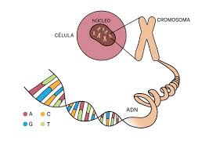

La División Celular
La mitosis. Durante la mitosis, una célula duplica todo su contenido, incluyendo sus cromosomas, y se divide para formar dos células hijas idénticas. Debido a lo crítico de este proceso, los pasos de la mitosis son controlados cuidadosamente por varios genes.
La meiosis. Asegura que los humanos tengan el mismo número de cromosomas en cada generación. Es un proceso de dos pasos que reduce el número de cromosomas a la mitad, de 46 a 23, para formar espermatozoides y óvulos. Cuando los espermatozoides y los óvulos se unen en la concepción, cada uno aporta 23 cromosomas, por lo que el embrión resultante tendrá los 46 habituales.
El ADN y la Genética Celular
El ácido desoxirribonucleico (ADN) es la molécula que transporta la información genética para el desarrollo y el funcionamiento de un organismo. El ADN está formado por dos hebras enlazadas que se enrollan una alrededor de la otra formando una escalera retorcida, una forma conocida como doble hélice. Cada hebra tiene una estructura principal formada por grupos azúcar (desoxirribosa) y fosfato alternados. Unido a cada azúcar se encuentra una de cuatro bases: adenina (A), citosina (C), guanina (G) o timina (T). Las dos hebras están conectadas por enlaces químicos entre las bases: la adenina se une a la timina y la citosina a la guanina. La secuencia de bases a lo largo de la estructura principal del ADN codifica información biológica, como las instrucciones para la formación de una proteína o una molécula de ARN.
